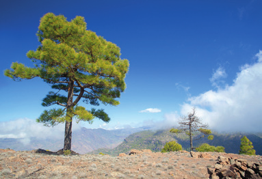
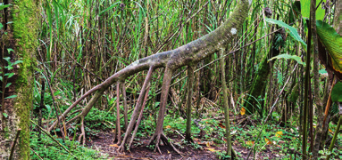
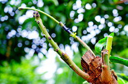

a. Investiga cuál es su nombre científico y explica, visualmente, la peculiaridad por la que es conocida.
b. ¿Afecta a su nutrición el hecho de que "camine"? ¿Por qué?
c. Busca otras plantas que presenten alguna característica que os llame la atención. Compártelo con el resto de la clase.
d. Reflexiona sobre estas plantas con características llamativas. ¿En el contexto actual de cambio climático, se verán afectadas?
¿Puede realizar la fotosíntesis la raíz subterránea de una planta? ¿Por qué? ¿Cómo obtendría todo lo necesario para vivir?
¿Qué sentido puede tener la existencia de plantas carnívoras y las plantas son organismos autótrofos?
¿Cómo argumentarías que las plantas son esenciales para la vida?
Relaciona los términos de las dos columnas en tu cuaderno.
Agua y sales
Vasos liberianos
Savia bruta
Vasos leñosos
Savia elaborada
Sustancias orgánicas
¿Las espigas del trigo son inflorescencias y cuyas flores son de color verde? ¿Por qué carecen estas flores de colores llamativos?
¿Es lo mismo polinización que fecundación? ¿Por qué?
Escribe en tu cuaderno correctamente las afirmaciones falsas.
a. La reproducción de las plantas con flores es sexual.
b. La fecundación es previa a la polinización.
c. La polinización es la unión del gameto masculino y el femenino.
Investiga y elabora una presentación sobre la forma de dispersión que se da en el olmo y en la zanahoria silvestre.
Razonar qué plantas producen más cantidad de polen, las que se polinizan mediante animales o las que lo hacen gracias al viento.
Además de los insectos, existen otros animales que también colaboran con las plantas en la polinización. Busca información sobre ellos. Cita las fuentes consultadas.
Secuencia los procesos de la reproducción sexual de las plantas.

Paisaje montañoso escénico

Árbol con raíces expuestas

Nuevo crecimiento en una rama de árbol